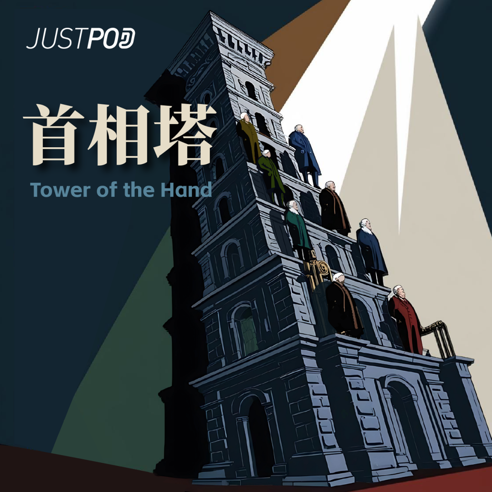

中统局往事02｜1931年国共情报战：徐恩曾、顾顺章与上海生死斗


本期介绍
徐恩曾究竟何许人也？作为国民党中统局的执行负责人，他是一位留美归国的工程师，与戴笠齐名的「谍王」。他如何一步步成为庞大特务组织的头目？从顾顺章叛变到向忠发被捕，上世纪三十年代的国共上海情报斗争隐藏着哪些至今未解的谜团？赢得情报战最大胜利的徐恩曾，为何最终被蒋介石「永不录用」？请听本期节目郑诗亮带来的精彩分享！
本期试听
本期为全新付费播客系列《谍海轶闻｜中统局往事》第二集，以上音频为试听版本，完整内容欢迎下拉至文章末尾扫描二维码解锁收听。
本期提到
徐恩曾 / 戴笠 / 陈立夫 / 陈果夫 / 何孟雄 / 柔石 / 钱壮飞 / 李克农 / 胡底 / 顾顺章 / 张国焘 / 恽代英 / 向忠发 / 费侠 / 叶秀峰 / 罗绮园 / 姚蓬子 / 邝惠安 / 瞿秋白 / 孙凤鸣 / 廖承志 / 潘汉年 / 王素媛 / 王素卿
《生死搏杀》《间谍王：戴笠与中国特工》
时间轴
正片开始
与戴笠并驾齐驱的中统局副局长徐恩曾
从实业救国到特务首脑：中统高层与军统的差异
电台情报战：国共早期斗争中的通信技术较量
「立三路线」与长江流域的军事盲动
徐恩曾回忆录中的王明告密疑云
「龙潭三杰」如何潜伏中统：地缘、学缘与利益捆绑
顾顺章：苏俄训练出身的江湖气特务
魔术演出与叛变事件始末
徐恩曾评顾顺章：「特务天才，但政治认识极其幼稚」
断指被认，向忠发被捕
「爱棠村事件」与三十年代知名案件
担心逃脱、老蒋上头、杀鸡儆猴：向忠发被迅速处决的三种猜测
「自首自新」：顾顺章的工作遗产与中统的黄金时代
徐恩曾与费侠的传奇婚姻
徐老板的终局：贪腐被查与转行经商 本期嘉宾 郑诗亮，文史研究者 程衍樑（微博@GrenadierGuard2）
解锁全部内容
由于平台之间不互通，所以您需要根据自己的收听习惯选择平台购买，下方二维码可直达小宇宙app或微信公众号，享受优惠价一次性购齐整季六期，网易云音乐与喜马拉雅目前仅支持单集付费。

👂🏻
文稿、排版：Yo编辑：思钊


中统局往事01｜蒋家天下陈家党：陈立夫、CC系与情报王国的诞生


